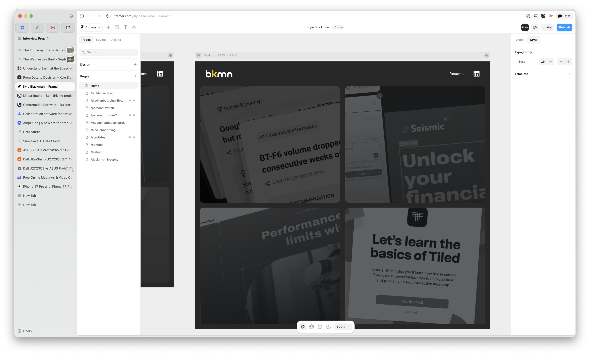
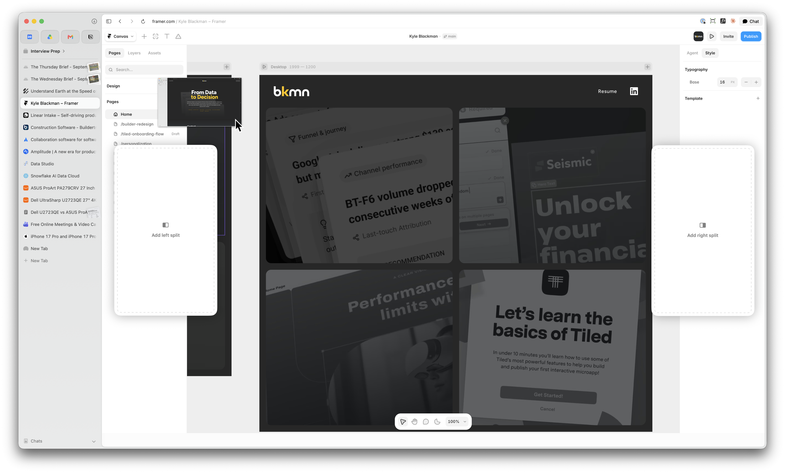
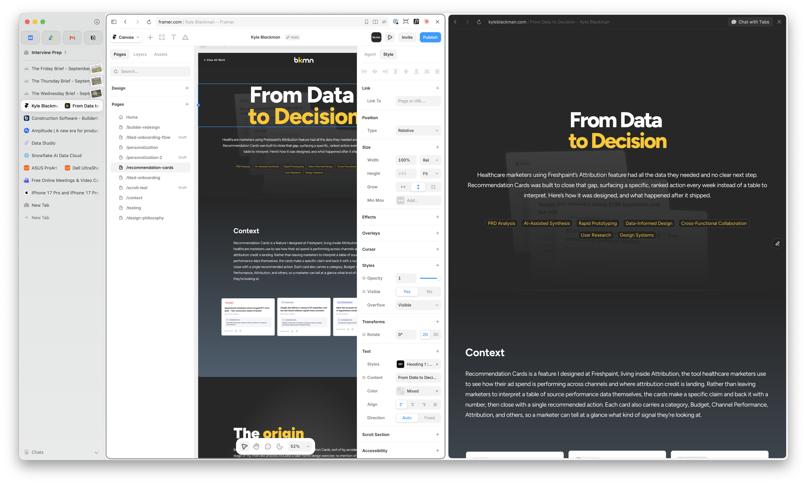
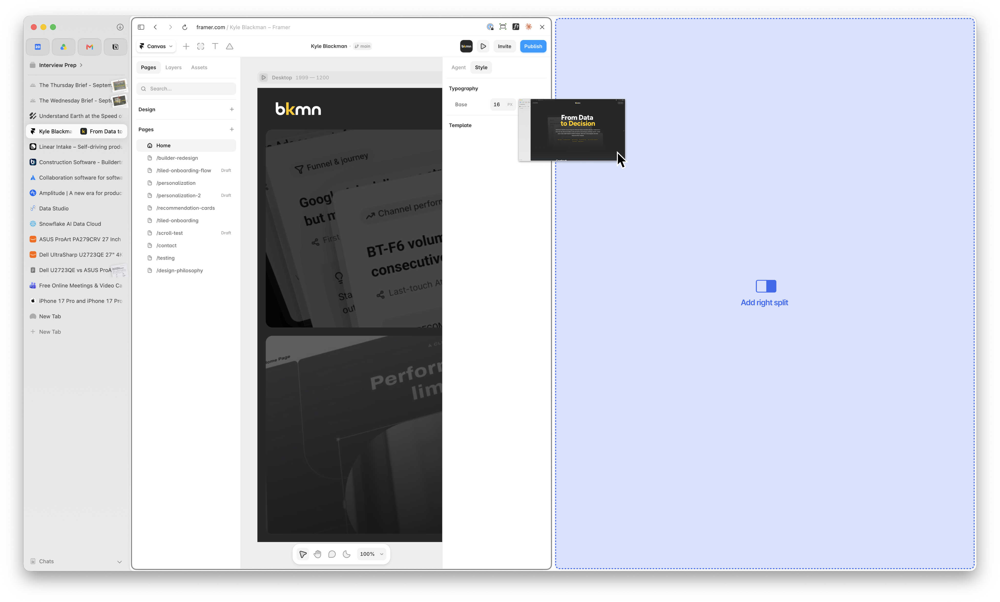
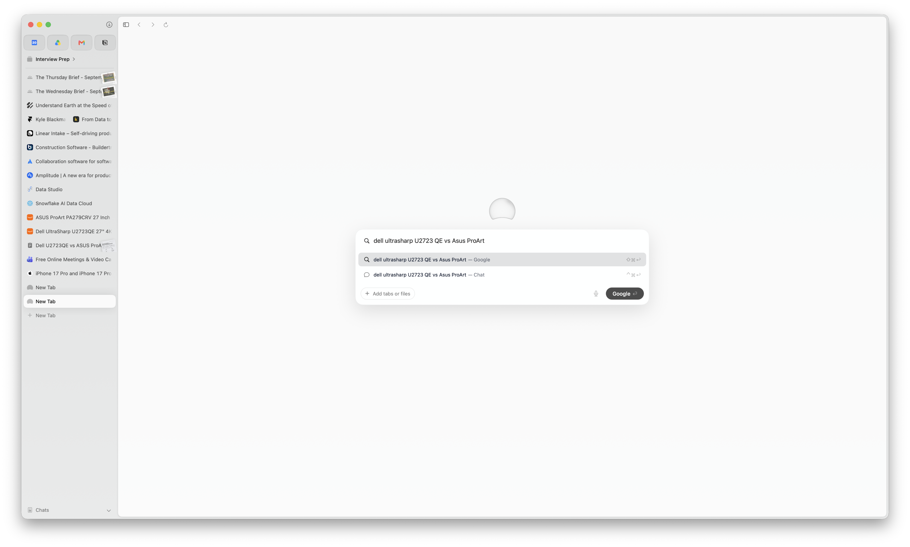
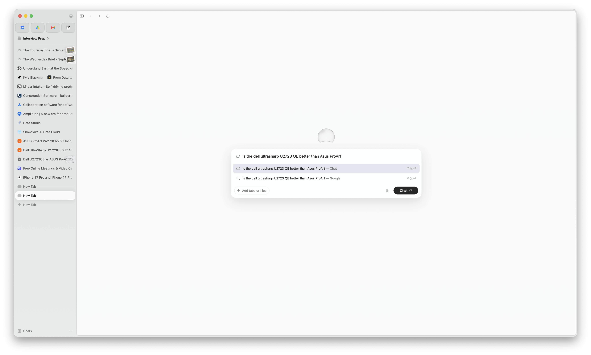
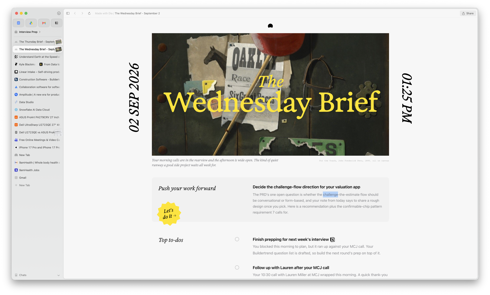
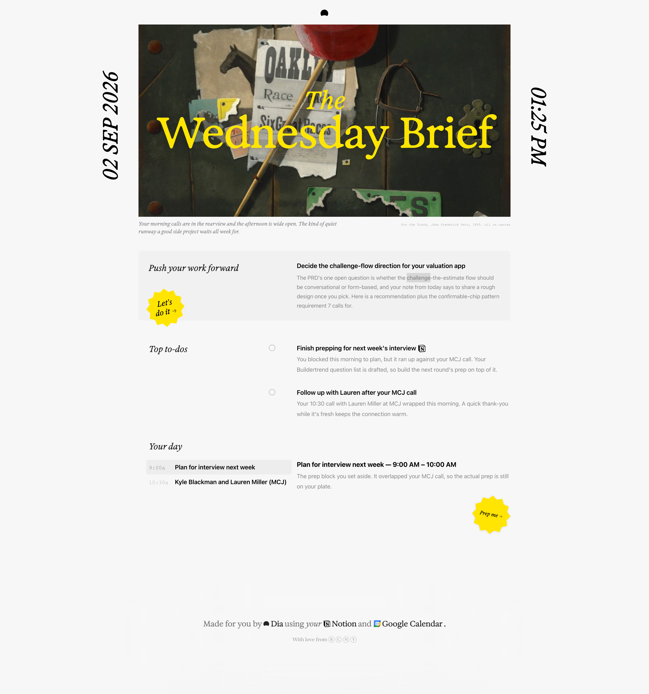

The tab bar I never knew I needed.
Vertical isn't new. Chrome and Safari have both tried it. Dia just saw the potential and did it right.
My favorites, pinned at the top.
They read like app icons here, not like squeezed-down favicons fighting for space along the top of a window.
Doesn't matter how many tabs I have open. I can still read them.
A name, not a favicon you have to squint at and guess. Tabs I stop using auto-clear after a set amount of time, so the list never turns into the graveyard my horizontal tab bar always became. Nothing revolutionary. Just decisions made in the right order.
Reference and build, side by side.
Two tabs side by side, three when I need them, is how I compare, reference, and keep a thought in view while I work on another.
Getting there is the hard part.
Getting there is trickier than it needs to be. Dia floats an overlay of empty drop zones on top of the current page and asks me to guess what happens next.
There's a better way in.
There's a better path: drag a tab into the viewport and let the screen split so I can see where the drop is landing, or drag one tab onto another to merge them. Instead I take the safe route. Select two tabs, right-click, merge. It's the path I trust.
Try the prototype↗I was skeptical of Dia's AI chat... until it won me over.
Dia's headline feature is AI. That's not why I started using it. I saw little value in the chat feature at first, I hadn't had my aha moment yet. That came when I was buying a monitor. I had two spec pages open in split view, and instead of reading both, I asked chat to compare them. Ten seconds later I had my answer.
I can ask like I'd ask a person.
Now I use it for smaller things too. Old browsers make me search for the word "parking." Dia lets me ask if there's parking. That's a smaller gap than it sounds, and it changes how I move through a page.
However, one thing still trips me up...
The action depends on how I phrase what I type. Write a standard query, like "Dell UltraSharp vs. Asus ProArt monitor," and it runs as a normal Google search.
Change the phrasing, change the action.
Phrase it like a question instead, and it routes to chat. It's a smart convention. But I've ended up in chat when all I wanted was a plain search. I don't always trust the AI enough to want it in front by default.
Like someone already read my inbox for me.
Dia connects to Teams, Notion, Linear, email, GitHub, and my calendar. Every morning it shows me what actually needs my attention, not everything that happened overnight. A message someone's waiting on. A PR sitting approved. A meeting in an hour with a brief already drafted so I'm not walking in cold. The stuff that would've slipped through the cracks if I'd had to hunt for it.
It knows my day, but it doesn't know me yet.
Out of the box, it assumes it has me figured out. I want the opposite. A brief that learns what matters to me, what to skip, what to surface louder. An AI feature that can't be shaped is still a static feature. That's the difference between one that runs and one that grows.
None of this is new. Other browsers did it first. Dia did it right.
My design philosophy↗